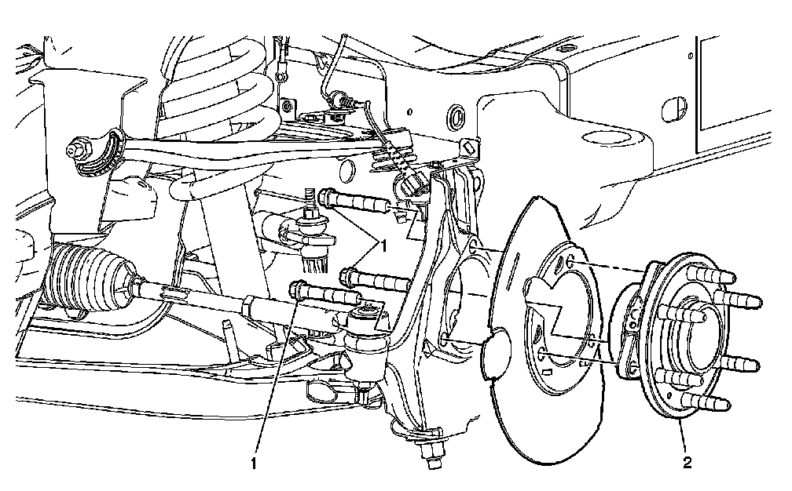
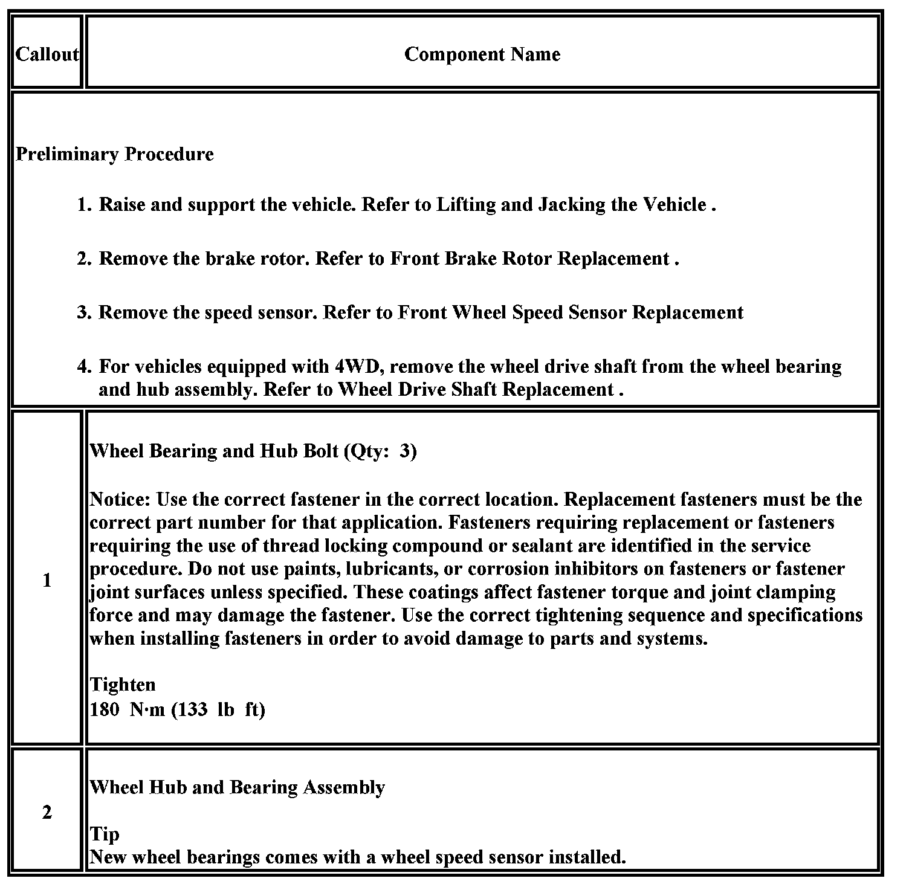

Operation CHARM
: Car repair manuals for everyone.
Home
>>
Cadillac
>>
2007
>>
Escalade ESV AWD V8-6.2L
>>
Repair and Diagnosis
>>
Transmission and Drivetrain
>>
Drive Axles, Bearings and Joints
>>
Wheel Bearing
>>
Service and Repair
>>
Wheel Hub, Bearing, and Seal Replacement (1500 Series)
Wheel Hub, Bearing, and Seal Replacement (1500 Series)
Front
Wheel Hub
, Bearing, and Seal Replacement (1500)

